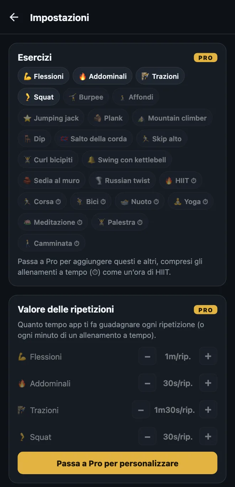
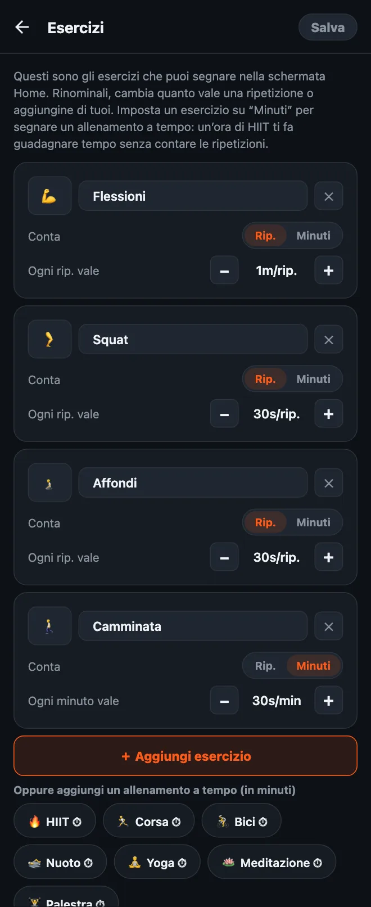

Come personalizzare i tuoi esercizi in HonorFit
Ciao a tutti! HonorFit è nato come la mia app per bloccare le app con le flessioni (in inglese): Instagram resta bloccato finché non faccio un po’ di flessioni, e le segno io, sulla parola (in inglese), senza fotocamera. Di base ha quattro esercizi: flessioni, addominali, trazioni e squat.
Ma non tutti vogliono fare flessioni. Magari i tuoi polsi le odiano, magari preferisci i burpee, o magari oggi hai già corso 8 chilometri e vuoi che contino. Giusto! Per questo puoi cambiare tutto. Ecco esattamente come, e cosa è gratis e cosa richiede Pro.
Cosa è gratis e cosa è Pro
Te lo dico subito: cambiare i tuoi esercizi è una funzione Pro. La versione gratuita ha i quattro esercizi di base con questi valori:
| Esercizio | Ogni ripetizione vale (predefinito) |
|---|---|
| 💪 Flessioni | 1 minuto |
| 🔥 Addominali | 30 secondi |
| 🧗 Trazioni | 1 minuto e 30 secondi |
| 🦵 Squat | 30 secondi |
Nella versione gratuita ogni rotella delle ripetizioni arriva a 20 per serie, e puoi mettere da parte al massimo 20 minuti alla volta. Blocco, registrazione e statistiche sono gratis per sempre.
Pro costa 3 $ al mese oppure 19,99 $ una tantum. È il prezzo negli Stati Uniti: cambia in base al paese e alla valuta, e lo store ti mostra il tuo. Con Pro puoi aggiungere, rinominare e togliere esercizi, cambiare quanto vale ogni ripetizione, segnare gli allenamenti a tempo in minuti, le rotelle arrivano a 100 per serie e sparisce il limite dei 20 minuti. In Pro c’è anche altro, ma questo articolo parla solo di esercizi.

1. Apri l’editor degli esercizi
- Nella schermata principale, tocca l’ingranaggio in alto a destra per aprire le Impostazioni.
- Tocca la scheda Esercizi, in cima.
Vedrai una scheda per ogni esercizio. Niente di quello che fai qui ha effetto finché non tocchi Salva in alto a destra, quindi smanetta quanto vuoi. Se esci senza salvare, non cambia niente.

2. Rinomina un esercizio o cambia la sua emoji
Tocca il nome e scrivi quello che vuoi. “Flessioni” può diventare “Flessioni sulle ginocchia” o “Flessioni al muro”, se è quello che fai davvero. Per cambiare l’icona, tocca il quadratino dell’emoji a sinistra e scegline una dalla griglia (ce ne sono una quarantina, quasi tutte a tema sport).
Un dettaglio: i nomi di base seguono la lingua dell’app, quindi “Squat” diventa “Squats” se hai il telefono in inglese. Appena ne rinomini uno, viene mostrato esattamente quello che hai scritto.
3. Decidi quanto tempo schermo vale ogni ripetizione
Sotto ogni esercizio c’è Ogni rip. vale, con un pulsante − e uno +. Ogni tocco sposta il valore di 5 secondi, e il minimo è 5 secondi. Così puoi far valere i burpee 1m30s e i jumping jack 10s, come ti sembra giusto.
Puoi anche cambiare solo i valori senza aprire l’editor: nelle Impostazioni c’è la sezione Valore delle ripetizioni, subito sotto la scheda Esercizi, con gli stessi pulsanti −/+.
4. Aggiungi un esercizio
Ci sono due modi:
- Tocca “＋ Aggiungi esercizio”. Compare una nuova scheda chiamata “Nuovo esercizio” che vale 30 secondi a ripetizione. Dagli un nome e imposta il valore.
- Tocca un suggerimento. Sotto il pulsante c’è una fila di esercizi comuni da aggiungere con un tocco: Burpee, Affondi, Jumping jack, Plank, Mountain climber, Dip, Salto della corda, Skip alto, Curl bicipiti, Swing con kettlebell, Sedia al muro e Russian twist. Anche questi partono da 30 secondi a ripetizione. Quando ne aggiungi uno, sparisce dai suggerimenti.
Ogni esercizio che hai ha la sua rotella nella schermata principale, quindi io starei sui quattro. Di più e ti ritrovi a scorrere per trovare quello che ti serve.
5. Segna gli allenamenti a tempo (minuti invece di ripetizioni)
È la cosa che mi chiedono di più. Certo esercizio proprio non si conta a ripetizioni: una camminata, una lezione di yoga, una corsa, un’ora in palestra. Ogni scheda ha un selettore Conta: Rip. | Minuti. Mettilo su Minuti e quella rotella conta i minuti, e il valore diventa Ogni minuto vale.
Ci sono anche suggerimenti a tempo da aggiungere con un tocco (hanno un ⏱): HIIT, Corsa, Bici, Nuoto, Yoga, Meditazione, Palestra e Camminata.
I nuovi allenamenti a tempo partono da 30 secondi per minuto, quindi un’ora di HIIT vale 30 minuti di app. Occhio: quando passi un esercizio da Rip. a Minuti o viceversa, il suo valore torna a 30 secondi, perché “1 minuto a ripetizione” e “1 minuto al minuto” sono due accordi molto diversi. Basta reimpostarlo dopo il cambio.
La rotella conta minuti interi, quindi un plank di 30 secondi non sta bene in Minuti. Per gli esercizi isometrici come questo, lo lascerei su Rip. e deciderei cosa vuol dire una ripetizione per te (per esempio, una tenuta di 20 secondi).
6. Togline uno, o ricomincia da capo
- Tocca la ✕ su una scheda per togliere quell’esercizio. Devi sempre tenerne almeno uno.
- Ripristina predefiniti, in fondo, rimette i quattro originali con i valori originali. Come tutto il resto qui, vale solo dopo che tocchi Salva.
Come sceglierei i valori
Il valore è il prezzo delle tue app, quindi l’obiettivo è un prezzo che pagherai davvero invece di barare. Qualche punto di partenza:
- Gli esercizi più duri valgono di più. Trazioni e burpee a 1m30s, flessioni a 1m, squat e affondi a 30s.
- Le attività a tempo più o meno a metà. 30 secondi al minuto vuol dire che una camminata di 20 minuti ti compra 10 minuti di scroll. Se camminare è l’abitudine che vuoi costruire di più, portala a 1 minuto al minuto.
- Se ti accorgi che gonfi i numeri, abbassa il prezzo. È la mia regola quando si va sulla parola. Segnare ripetizioni che non hai fatto vuol dire che il prezzo è sbagliato, non che sei negato.
- La modalità difficile (Pro) dimezza tutti i valori con il pulsante 💀 Difficile in alto, se vuoi una giornata più tosta senza modificare tutto.
Se ti servono idee per configurazioni precise, ho scritto altri due articoli: esercizi di Kegel e ponte glutei per sbloccare le app e esercizi a basso impatto per quando le flessioni non fanno per te.
HonorFit Blocker è un’app gratuita per iPhone e Android che blocca le app. Funziona sulla parola: niente fotocamera, nulla esce dal tuo telefono. Gli esercizi personalizzati sono inclusi in Pro. Non è per tutti, ma magari a qualcuno di voi piacerà!